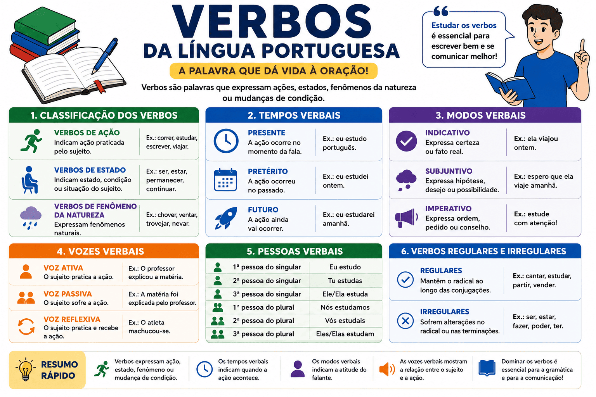

Verbos da Língua Portuguesa: conceito, classificação, tempos, modos, conjugação e exemplos
Os verbos da língua portuguesa são uma das classes gramaticais mais importantes da gramática. Eles estão presentes em praticamente todas as frases e são responsáveis por indicar ações, estados, fenômenos da natureza, mudanças de condição e processos.
Sempre que alguém fala, escreve ou interpreta um texto, utiliza verbos para transmitir informações. Por essa razão, o estudo dos verbos é fundamental para compreender o funcionamento da língua portuguesa, melhorar a produção textual e obter bons resultados em avaliações como ENEM, vestibulares e concursos públicos.
Além de indicar o que acontece em uma oração, os verbos informam quando a ação ocorre, quem a pratica e qual é a intenção do falante. Eles podem variar em pessoa, número, tempo, modo e voz, tornando-se uma das classes gramaticais mais ricas e complexas da língua.

O que são verbos?
Verbos são palavras variáveis que expressam ações, estados, processos, mudanças de condição ou fenômenos da natureza. Eles constituem o núcleo da maioria dos predicados e desempenham papel essencial na construção do sentido das orações.
Observe os exemplos:
- Maria estuda todos os dias.
- O bebê dorme tranquilamente.
- Choveu durante a madrugada.
- Os atletas venceram a competição.
- A cidade permanece tranquila.
Em todos os casos, os verbos expressam a principal informação da oração.
Os verbos são classificados como palavras variáveis porque sofrem flexões relacionadas a:
- pessoa;
- número;
- tempo;
- modo;
- voz.
Qual é a função dos verbos na oração?
A principal função dos verbos é indicar o acontecimento central da oração. Em grande parte dos casos, eles constituem o núcleo do predicado e estabelecem relações entre os demais termos da frase.
Observe:
Os alunos estudaram para a prova.
- Sujeito: Os alunos.
- Verbo: estudaram.
- Predicado: estudaram para a prova.
Sem o verbo, a oração perderia seu sentido principal.
Para aprofundar seus estudos, leia também: Sujeito e predicado: conceito, tipos e exemplos.
Classificação dos verbos
Os verbos podem ser classificados de acordo com o significado que expressam.
Verbos de ação
Indicam uma ação realizada pelo sujeito.
Exemplos:
- correr
- escrever
- estudar
- viajar
- construir
Exemplo em contexto:
João corre todas as manhãs.
Verbos de estado
Indicam estados, condições ou situações em que o sujeito se encontra.
- ser
- estar
- permanecer
- continuar
- parecer
Exemplo:
A sala está organizada.
Verbos de fenômeno da natureza
Expressam acontecimentos naturais e normalmente aparecem em orações sem sujeito.
- chover
- ventar
- trovejar
- nevar
- granizar
Exemplo:
Choveu muito ontem.
Estrutura dos verbos
Os verbos são formados por diferentes elementos que ajudam a identificar seu significado e suas flexões.
Radical
O radical é a parte que contém o significado básico do verbo.
Exemplo:
Cantar → cant-
O radical aparece em palavras como:
- cantamos
- cantarei
- cantávamos
- cantariam
Vogal temática
A vogal temática indica a conjugação do verbo.
| Conjugação | Vogal temática | Exemplo |
|---|---|---|
| 1ª conjugação | a | cantar |
| 2ª conjugação | e | vender |
| 3ª conjugação | i | partir |
Desinências
São os elementos que indicam pessoa, número, tempo e modo verbal.
Exemplo:
Cantávamos
- Radical: cant-
- Vogal temática: a
- Desinência modo-temporal: va
- Desinência número-pessoal: mos
O que é conjugação verbal?
Conjugação verbal é o conjunto de formas que um verbo pode assumir ao variar em pessoa, número, tempo e modo.
Na língua portuguesa existem três conjugações verbais:
| Conjugação | Terminação | Exemplo |
|---|---|---|
| 1ª conjugação | -ar | cantar |
| 2ª conjugação | -er | vender |
| 3ª conjugação | -ir | partir |
Conhecer as conjugações facilita o aprendizado dos tempos verbais e da concordância verbal.
Tempos verbais
Os tempos verbais indicam quando ocorre a ação expressa pelo verbo.
Presente
Indica ações atuais, habituais ou verdades universais.
Exemplos:
- Eu estudo português.
- O Sol nasce no leste.
- Ela trabalha diariamente.
Pretérito
Indica ações ocorridas no passado.
Pretérito perfeito
Expressa uma ação concluída.
Exemplo:
Eu estudei ontem.
Pretérito imperfeito
Indica uma ação habitual ou contínua no passado.
Exemplo:
Eu estudava todas as noites.
Pretérito mais-que-perfeito
Expressa uma ação anterior a outra já ocorrida no passado.
Exemplo:
Quando cheguei, ele já estudara o conteúdo.
Futuro
Futuro do presente
Indica uma ação que acontecerá futuramente.
Eu estudarei amanhã.
Futuro do pretérito
Indica hipótese, condição ou possibilidade.
Eu estudaria mais se tivesse tempo.
Modos verbais
Os modos verbais indicam a atitude do falante diante da ação verbal.
Modo indicativo
Expressa fatos considerados certos ou reais.
Ela viajou ontem.
Modo subjuntivo
Expressa hipótese, dúvida, possibilidade ou desejo.
Espero que ela viaje amanhã.
Modo imperativo
Expressa ordem, conselho, pedido ou instrução.
Estude com atenção.
Formas nominais dos verbos
As formas nominais recebem esse nome porque podem desempenhar funções semelhantes às dos substantivos, adjetivos ou advérbios.
Infinitivo
Representa o verbo em sua forma original.
Exemplo:
Estudar é fundamental para aprender.
Gerúndio
Indica ação em andamento.
Exemplo:
Os alunos estavam estudando.
Particípio
Geralmente indica uma ação concluída.
Exemplo:
O trabalho foi entregue.
O que é locução verbal?
Locução verbal é a combinação de dois ou mais verbos que funcionam como uma única ação verbal.
Normalmente, ela é formada por um verbo auxiliar e um verbo principal.
Exemplos:
- Vou estudar amanhã.
- Estou lendo um livro.
- Tinha terminado a atividade.
- Pode sair agora.
Nessas construções, o verbo auxiliar acrescenta informações de tempo, modo ou aspecto, enquanto o verbo principal expressa a ação principal.
Verbos auxiliares
Os verbos auxiliares são aqueles que acompanham um verbo principal para formar locuções verbais ou tempos compostos. Eles desempenham um papel importante na língua portuguesa porque acrescentam informações relacionadas ao tempo, ao modo, ao aspecto ou à voz verbal.
Os principais verbos auxiliares da língua portuguesa são:
- ser
- estar
- ter
- haver
- ir
Observe alguns exemplos:
- Eu tenho estudado bastante.
- Ela está trabalhando agora.
- Nós vamos viajar nas férias.
- O relatório foi entregue ontem.
- Eles haviam concluído o projeto.
Nas locuções verbais, o verbo auxiliar pode aparecer flexionado, enquanto o verbo principal geralmente surge em uma das formas nominais (infinitivo, gerúndio ou particípio).
Verbos transitivos e intransitivos
Outra forma importante de classificar os verbos é observar se eles necessitam ou não de complementos para completar seu sentido.
Verbos transitivos
São verbos que precisam de complemento para que a informação fique completa.
Exemplos:
- Ana comprou um livro.
- O professor explicou a matéria.
- Os alunos resolveram os exercícios.
Nesses casos, os termos destacados completam o sentido do verbo.
Verbos intransitivos
São verbos que apresentam sentido completo e não exigem complemento.
Exemplos:
- O bebê dormiu.
- O atleta correu.
- O avião decolou.
Embora possam aparecer acompanhados de adjuntos adverbiais, esses verbos não necessitam de complementos para que a oração faça sentido.
Para aprofundar seus estudos sobre esse assunto, leia também: Transitividade verbal: verbos transitivos e intransitivos.
Pessoas verbais
Os verbos variam de acordo com a pessoa gramatical que pratica a ação.
| Pessoa | Pronome | Exemplo |
|---|---|---|
| 1ª pessoa do singular | Eu | Eu estudo. |
| 2ª pessoa do singular | Tu | Tu estudas. |
| 3ª pessoa do singular | Ele/Ela | Ele estuda. |
| 1ª pessoa do plural | Nós | Nós estudamos. |
| 2ª pessoa do plural | Vós | Vós estudais. |
| 3ª pessoa do plural | Eles/Elas | Eles estudam. |
A identificação correta das pessoas verbais é fundamental para realizar adequadamente a concordância verbal.
Vozes verbais
As vozes verbais indicam a relação existente entre o sujeito e a ação expressa pelo verbo.
Voz ativa
Na voz ativa, o sujeito pratica a ação verbal.
Exemplo:
O professor explicou a matéria.
Nesse caso, o sujeito "o professor" é o agente da ação.
Voz passiva
Na voz passiva, o sujeito sofre ou recebe a ação verbal.
Exemplo:
A matéria foi explicada pelo professor.
Agora o sujeito "a matéria" recebe a ação praticada pelo agente da passiva.
Voz reflexiva
Na voz reflexiva, o sujeito pratica e recebe a ação ao mesmo tempo.
Exemplos:
- O atleta machucou-se.
- Maria penteou-se.
- Os irmãos abraçaram-se.
As vozes verbais são frequentemente cobradas em vestibulares e concursos por influenciarem a interpretação textual.
Verbos regulares e irregulares
Os verbos também podem ser classificados de acordo com seu comportamento durante a conjugação.
Verbos regulares
Mantêm o radical ao longo das conjugações.
Exemplos:
- cantar
- estudar
- partir
- vender
Observe:
- eu canto
- nós cantamos
- eles cantarão
O radical "cant-" permanece o mesmo.
Verbos irregulares
Sofrem alterações no radical ou nas terminações ao serem conjugados.
Exemplos:
- ser
- estar
- fazer
- poder
- dizer
- trazer
Observe:
- eu faço
- eu fiz
- eu farei
Percebe-se que o verbo sofre modificações durante a conjugação.
Verbos abundantes
Os verbos abundantes apresentam duas formas de particípio: uma regular e outra irregular.
Exemplos:
| Verbo | Particípio regular | Particípio irregular |
|---|---|---|
| Aceitar | Aceitado | Aceito |
| Entregar | Entregado | Entregue |
| Salvar | Salvado | Salvo |
Em geral, as formas irregulares são mais utilizadas na língua contemporânea.
Verbos defectivos
Os verbos defectivos são aqueles que não apresentam conjugação completa em todas as pessoas, tempos ou modos verbais.
Exemplos:
- abolir
- falir
- reaver
Esses verbos possuem restrições de uso em determinadas formas conjugadas.
Verbos unipessoais
Os verbos unipessoais costumam ser empregados apenas na terceira pessoa do singular ou do plural.
Exemplos:
- chover
- nevar
- trovejar
- anoitecer
- amanhecer
Exemplos em frases:
- Choveu durante toda a noite.
- Amanheceu cedo.
- Trovejou bastante ontem.
Principais erros envolvendo verbos
Muitos estudantes apresentam dificuldades relacionadas à conjugação verbal e à concordância. Alguns erros são recorrentes em redações e provas.
Confusão entre mas e mais
Embora não seja um erro verbal, aparece frequentemente em produções escritas.
- Correto: Estudei muito, mas não consegui terminar.
- Incorreto: Estudei muito, mais não consegui terminar.
Erro de concordância verbal
- Correto: Os alunos estudaram.
- Incorreto: Os alunos estudou.
Uso inadequado do infinitivo
- Correto: Eles precisam estudar.
- Incorreto: Eles precisam estudarem.
Dominar os verbos contribui significativamente para melhorar a escrita e evitar erros gramaticais.
Como os verbos são cobrados no ENEM e nos vestibulares?
No ENEM e em diversos vestibulares, os verbos raramente aparecem isolados em questões puramente gramaticais. Em geral, eles são analisados dentro de textos, propagandas, tirinhas, poemas, reportagens e artigos de opinião.
Os examinadores costumam explorar:
- efeitos de sentido produzidos pelos tempos verbais;
- diferenças entre indicativo e subjuntivo;
- interpretação de locuções verbais;
- concordância verbal;
- vozes verbais;
- transitividade verbal;
- relações temporais presentes no texto;
- intenção comunicativa associada ao uso dos verbos.
Por isso, é importante compreender não apenas a conjugação dos verbos, mas também os sentidos que eles produzem em diferentes contextos.
Perguntas frequentes sobre verbos
O que são verbos?
São palavras que indicam ações, estados, processos, mudanças de condição ou fenômenos da natureza.
Quais são os principais modos verbais?
Os principais modos verbais da língua portuguesa são indicativo, subjuntivo e imperativo.
Quais são os tempos verbais?
Os tempos verbais dividem-se em presente, pretérito e futuro, cada um com subdivisões específicas.
O que é conjugação verbal?
É o conjunto de formas que um verbo assume ao variar em pessoa, número, tempo e modo.
O que é locução verbal?
É a combinação de dois ou mais verbos que funcionam como uma única ação verbal.
O que são formas nominais do verbo?
São infinitivo, gerúndio e particípio.
Qual a diferença entre verbos regulares e irregulares?
Os verbos regulares mantêm seu radical durante toda a conjugação, enquanto os irregulares apresentam alterações.
O que são verbos auxiliares?
São verbos utilizados para formar locuções verbais, tempos compostos e algumas estruturas da voz passiva.
Verbos são cobrados no ENEM?
Sim. Os verbos estão entre os conteúdos gramaticais mais cobrados no ENEM, vestibulares e concursos públicos.
Qual é a importância dos verbos na interpretação de textos?
Os verbos ajudam a identificar ações, intenções, temporalidade, hipóteses, opiniões e relações de sentido presentes nos textos.
Resumo sobre verbos da língua portuguesa
- Os verbos indicam ações, estados, processos ou fenômenos da natureza.
- São palavras variáveis que apresentam flexões de pessoa, número, tempo, modo e voz.
- As três conjugações verbais terminam em -ar, -er e -ir.
- Os principais modos verbais são indicativo, subjuntivo e imperativo.
- As formas nominais são infinitivo, gerúndio e particípio.
- Os verbos podem ser transitivos, intransitivos, regulares ou irregulares.
- Locuções verbais são formadas por verbos auxiliares e verbos principais.
- O estudo dos verbos é essencial para a gramática, a produção textual e a interpretação de textos.
- Os verbos são amplamente cobrados no ENEM, vestibulares e concursos públicos.
Para complementar seus estudos de gramática, leia também:
- Classes gramaticais da língua portuguesa
- Concordância verbal
- Análise sintática
- Termos essenciais da oração
- Transitividade verbalv
- Sujeito e predicado
Explore Outros Conteúdos
Continue seus estudos acessando outras seções do site Mestre Kira: